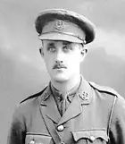

Alan Foster Paterson


Alan Foster Paterson attended the John Lyon School before becoming a bank clerk and receiving a commission in the Middlesex Regiment in 1915, later serving in Egypt and France. He was killed aged 23 on 1 July 1916 while attacking Hawthorn Ridge during the Battle of the Somme and, having no known grave, is commemorated on the Thiepval Memorial.
Civilian Life - Alan Foster Paterson was born on 22 May 1893 in Hendon, Middlesex, the younger of two sons of James and Hannah Paterson. His father was a 1st Class Assistant Accountant in the War Office, and the family lived in Harrow. Alan attended the John Lyon School and by 1911 was working as a bank clerk, as was his elder brother, James.
Military Life - Paterson received a commission in the 14th Battalion, Middlesex Regiment, on 26 February 1915. He went to Egypt on 1 December that year and subsequently proceeded to France. By July 1916 he was serving as a Lieutenant in the Middlesex Regiment, attached to the 2nd Battalion, Royal Fusiliers.
On 1 July 1916, the opening day of the Battle of the Somme, Paterson and the 2nd Royal Fusiliers took part in the attack towards Hawthorn Ridge and Beaumont-Hamel. At exactly 7:20 AM, a massive British mine hidden underneath the German fortification at Hawthorn Ridge was detonated, blowing a monumental crater into the earth. This signaled an immediate 10-minute British heavy artillery barrage before the infantry advanced. Because the infantry did not attack until 7:30 AM, the 10-minute gap gave surviving German machine gunners plenty of time to scramble out of their deep dugouts. They quickly set up defensive positions around the rim of the brand-new crater and along the undamaged parapets. When the whistle blew at 7:30 AM, Lieutenant Paterson and the men of the 2nd Royal Fusiliers climbed out of their trenches and advanced into No Man's Land toward Hawthorn Ridge. As soon as they stepped into the open, they were met by a devastating, cross-cutting wall of machine-gun and concentrated artillery fire. The battalion faced near-total annihilation trying to cross the open ground, and Lieutenant Paterson was among the wave of officers cut down in the first hours of the attack
His body was never recovered or identified, and he was recorded as missing. Aged 23, he has no known grave and is commemorated on the Thiepval Memorial to the Missing of the Somme in France.
Paterson's military service followed that of his brother, Private James Cochrane Paterson, 2950, ‘A’ Company, 9th Battalion, Royal Sussex Regiment, who died on 21st October 1915, aged 25. He died of wounds while in German hands and is buried in grave XVII.A.11 in Cologne Southern Cemetery. Both brothers are recorded in the research as having died during the First World War.